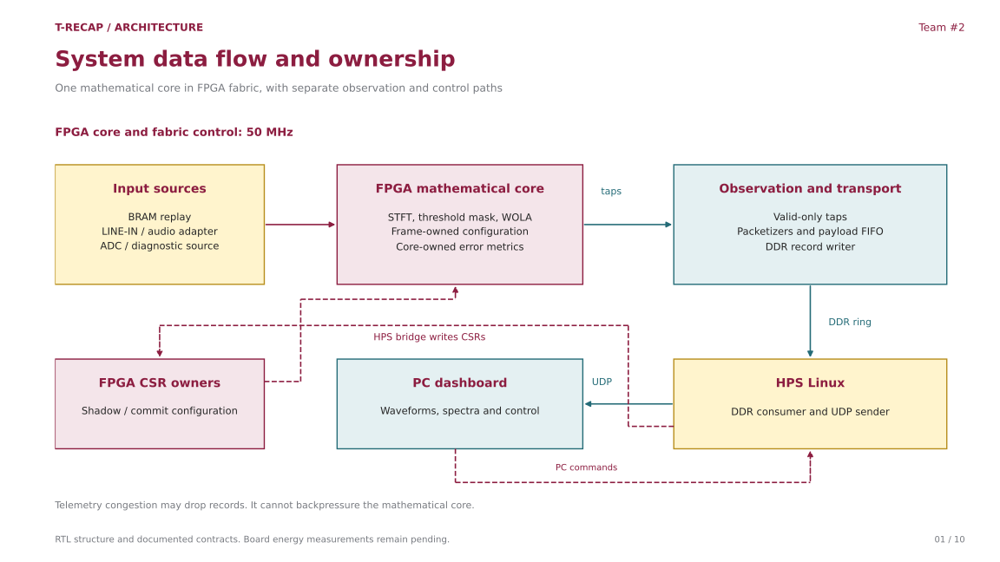
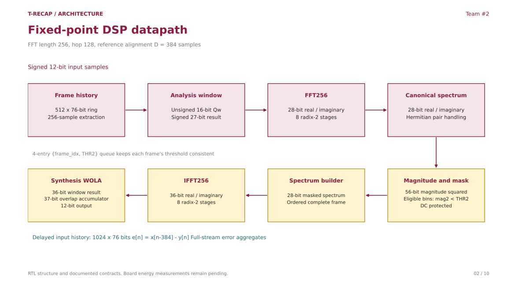
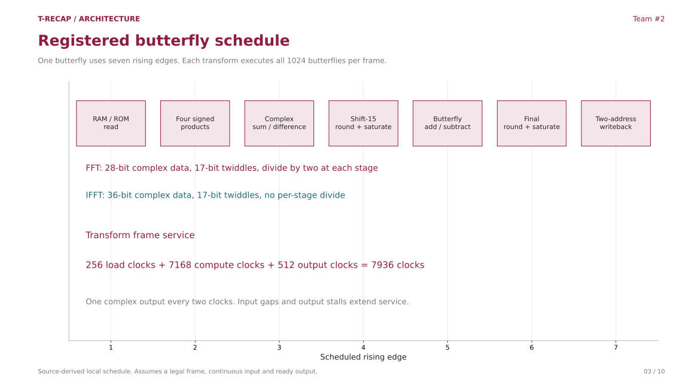
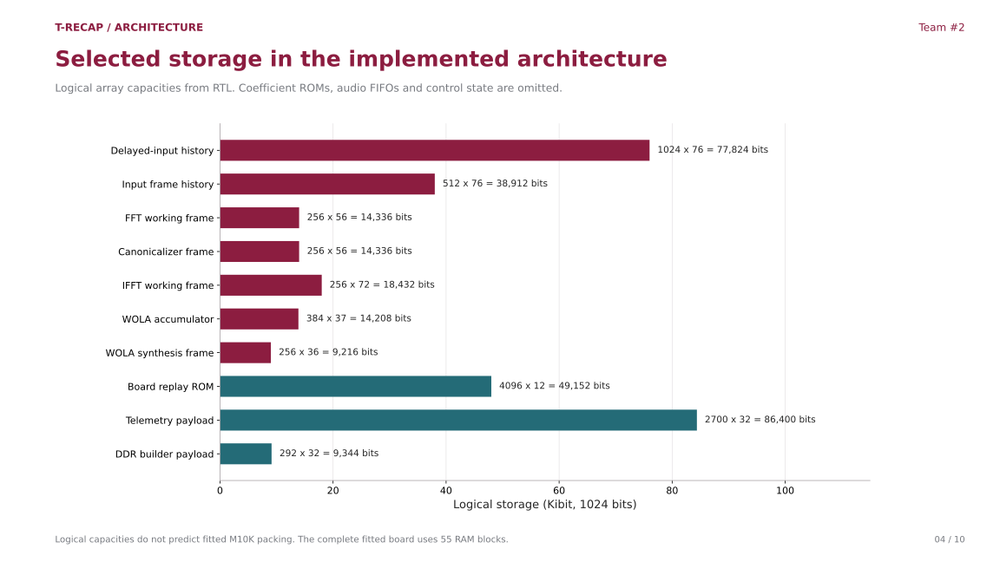
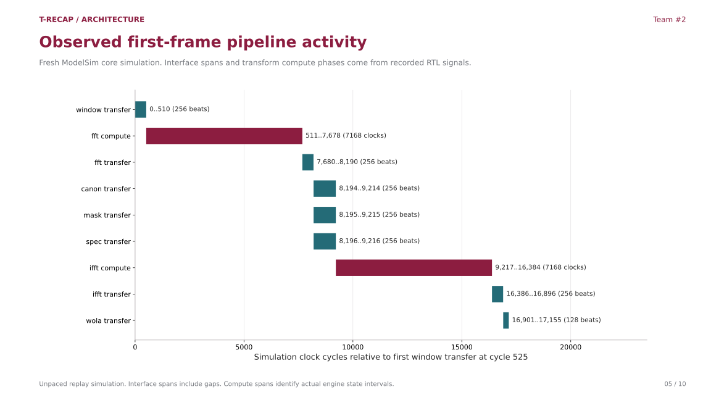
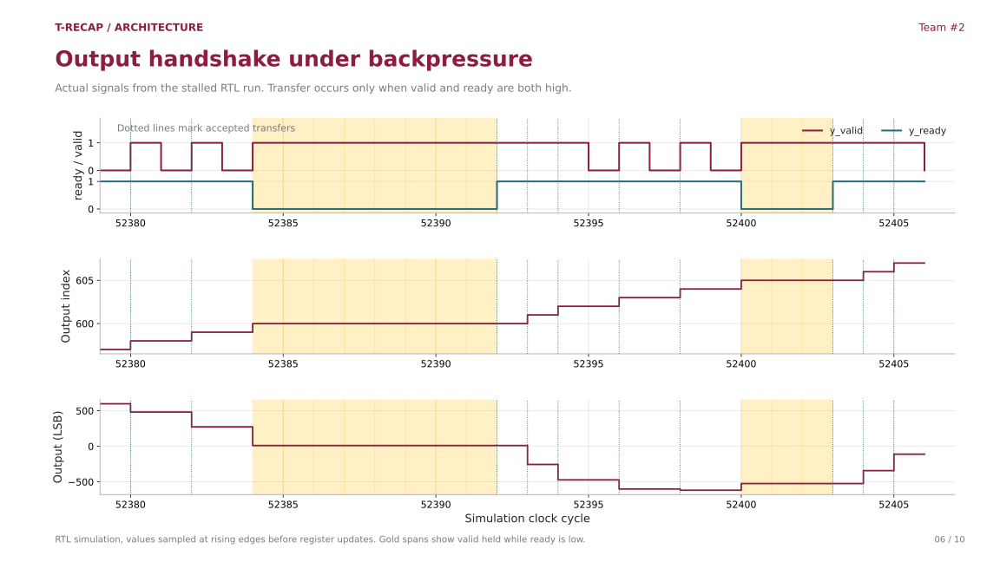
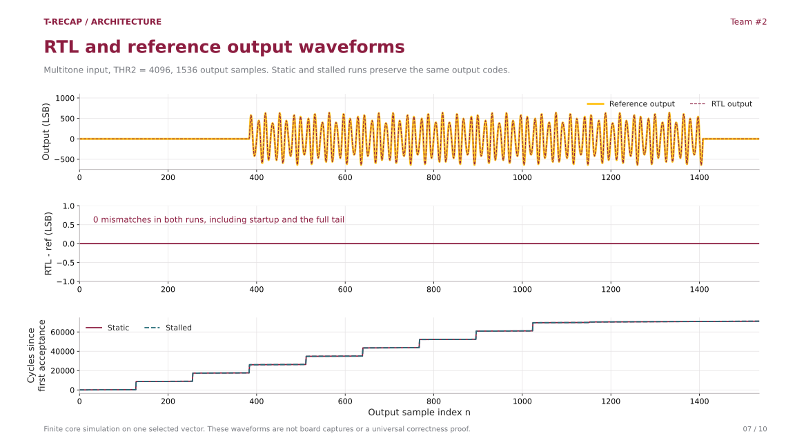
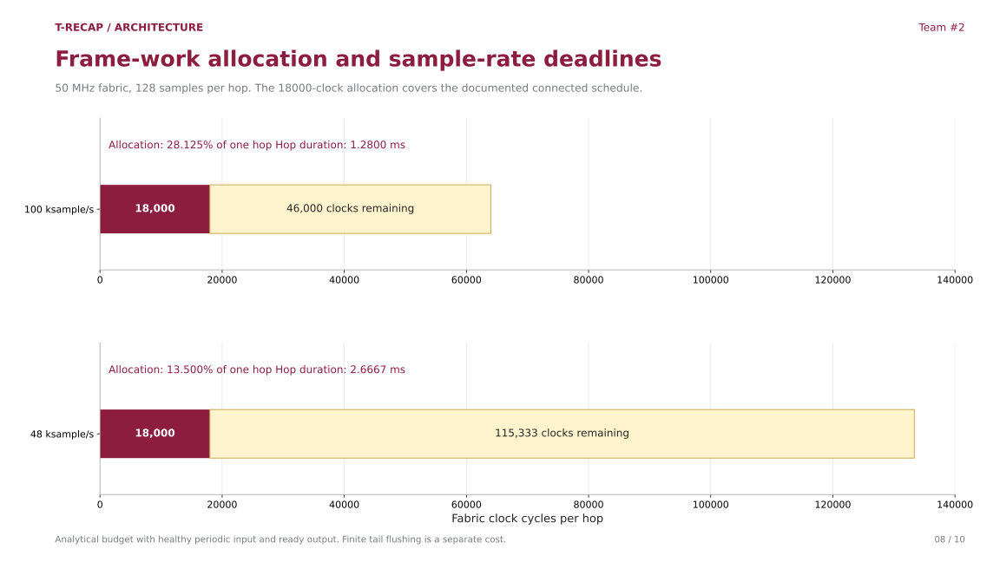
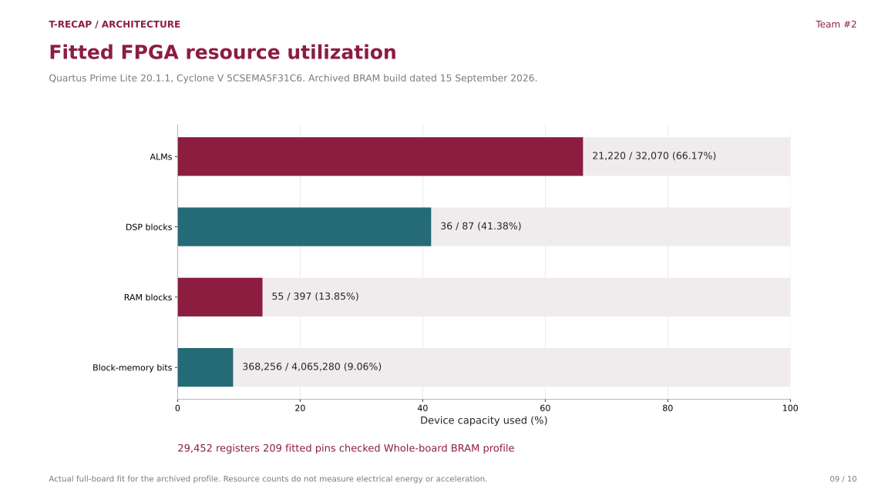
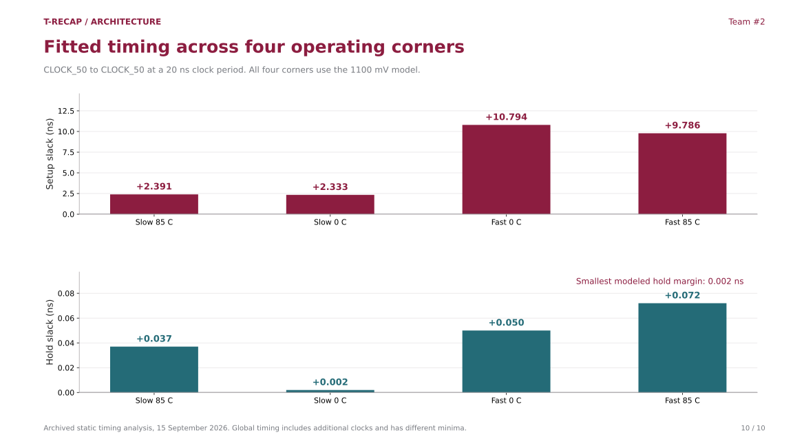

System ownership
RTL structure

The physical board instantiates one core inside source/core integration. The HPS forwards committed telemetry records and writes controls. Observers have no ready return path into the DSP core. End-to-end HPS/DDR/dashboard board acceptance remains open.
PNG SVGFixed-point datapath
RTL structure

Separate iterative FFT and IFFT engines use the frozen coefficient tables. The core captures THR2 at frame admission. WOLA uses the real IFFT component. Delayed-input history supports error calculation. The offline C++ reference model is not a physical FPGA block.
PNG SVGRegistered butterfly schedule
RTL schedule

The registered transaction separates multiplication, complex sum, quantization, addition and writeback. Counts include first and last accepted edges. Local transform service is 7936 clocks only under the stated conditions. It is not an end-to-end latency measurement.
PNG SVGStorage geometry
RTL structure

Large stores use synchronous embedded-memory schedules. Both history stores include sample indices. Selected logical capacities do not include every memory or register and are distinct from fitted device resource totals.
PNG SVGObserved frame timing
RTL simulation

Actual handshakes bound the first frame's interface spans. Engine-state traces identify 7168 compute clocks for each transform. Interface spans include gaps. The burst-driven testbench differs from periodic board sampling, so this is not board latency.
PNG SVGOutput handshake
RTL simulation

Gold marks valid=1 and ready=0. Output index and data remain held until acceptance. The testbench injects stalls at the reusable core output. Physical board telemetry taps cannot drive core ready.
PNG SVGRTL and reference waveforms
RTL simulation

Every output matches the qualified reference for this multitone case in both static and stalled simulations. The lower graph shows scheduling separately from numerical sample order. It is not a CPU/FPGA speed comparison.
PNG SVGFrame deadline budget
Analytical budget

The source-derived connected bound including metrics allowance is 17673 clocks, rounded to an 18000-clock allocation. At 50 MHz this is 360 microseconds. The recurrent budget excludes finite tail, analog delay and transport. Unbounded external stalls invalidate a finite service guarantee.
PNG SVGFitted resources
Quartus fit

The archived Lite build uses 21220 ALMs, 36 DSP blocks and 55 RAM blocks. Percentages use exact reported used/available counts. These are whole-board totals, including interfaces and telemetry, rather than isolated-core costs.
PNG SVGFitted timing
Quartus static timing

All four explicit fabric-clock timing queries pass. Minimum fabric setup is +2.333 ns and minimum hold is +0.002 ns. That narrow positive hold margin applies to the analyzed model. Global minimum setup is +1.727 ns and differs from the fabric-only number.
PNG SVG